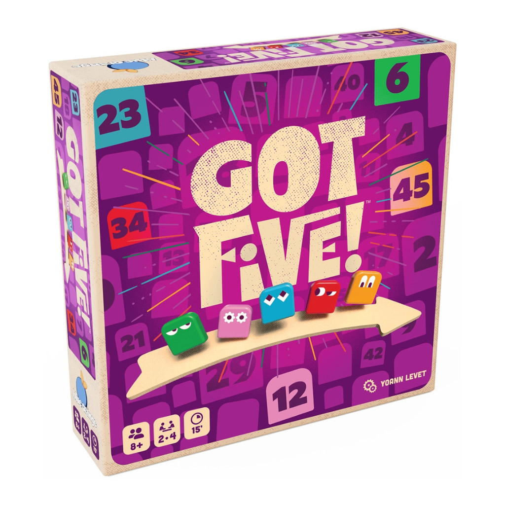
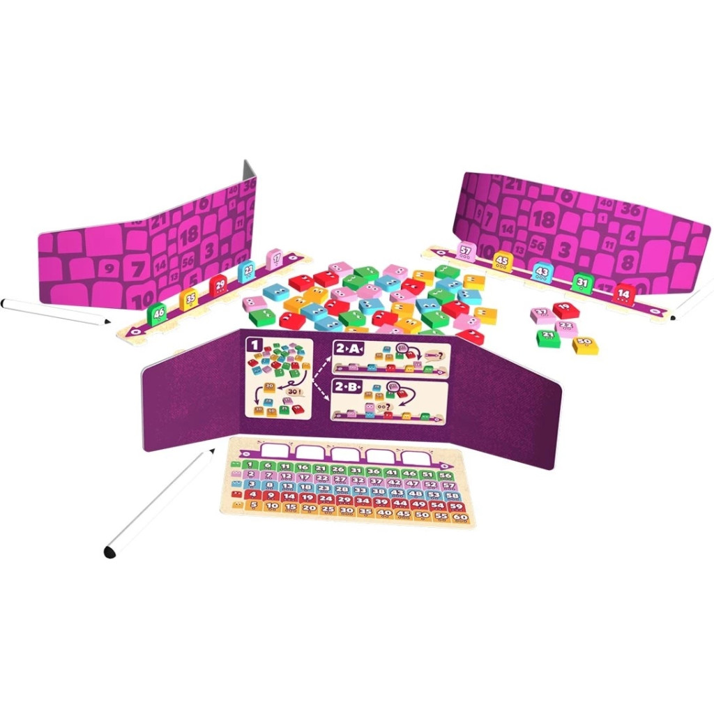

Got Five! est un jeu de déduction dans lequel chaque joueur doit deviner les cinq numéros placés devant lui… qu’il ne peut pas voir. À chaque tour, on révèle une tuile puis on demande un indice à un adversaire pour affiner ses hypothèses. L’objectif est d’être le premier à identifier correctement ses numéros.
Le jeu se compose de tuiles numérotées colorées, de supports pour les aligner, de paravents, de fiches de déduction et de feutres effaçables. L’univers est abstrait et centré sur la logique, sans thème narratif fort, privilégiant la réflexion et les indices visuels pour créer une expérience de casse-tête accessible et interactive.
À tout moment, un joueur peut annoncer la solution en énonçant ses cinq numéros dans l’ordre croissant. S’il a raison, il remporte immédiatement la partie ; en cas d’erreur, il est éliminé. Le jeu se poursuit alors jusqu’à ce qu’un autre joueur réussisse correctement sa déduction
8 ans
joueurs
minutes
Prix constatés le 26/05/2026